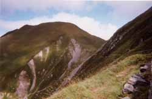

circuit du Vorassay (2299 m)

Départ : parking du Champel (1180 m)
Aller : 5,1 km, +1144 et - 25 m, 196 min
Retour : 6,1 km, -1119 m, 126 min
Difficulté : E
Période : juillet - septembre
Remarque : -
Bibliographie : 30 balades autour de St Gervais (balades 14 et 16).
Traverser le village et prendre à D le sentier balisé menant aux chalets de Miage. Il domine les gorges de la Gruvaz. Peu avant les chalets (panneau 56), monter au col de Tricot (sentier TMB, itinéraire AsF© 16.2, lire page 119).
Le Mont Vorassay s’atteint en AR par la croupe herbeuse.
Du col, redescendre par le GR, tourner à G à la forêt (panneau 57, échelle métallique) et rejoindre le Champel.
Photo Jeanne Viviand : le mont Vorassay et le col Tricot, vus de la fontaine aux Comtes.